01
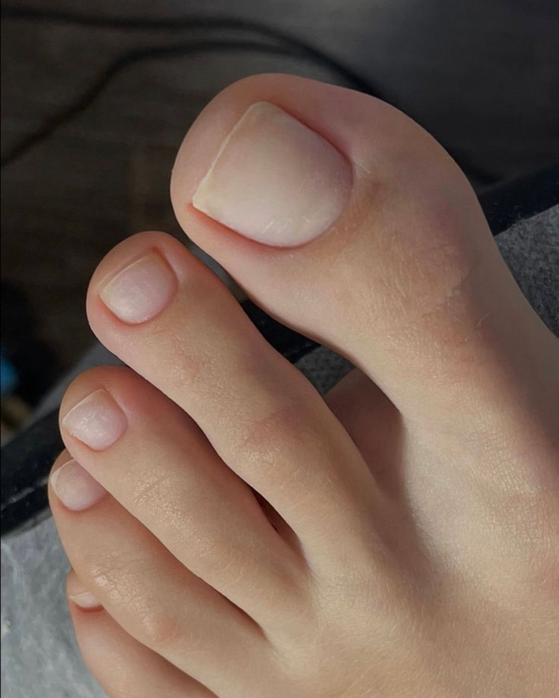
Педикюр с нуля
Первые шаги в профессии: эстетика педикюра, работа с пальчиками и ногтями.
«Работаю со всеми видами сложных стоп и ногтей»: вросший ноготь, мозоли и натоптыши, трещины, медицинский педикюр. Проспект Ленина, 60, каждый день с 8 до 20.
От первых шагов в педикюре до работы со сложной стопой. Четыре направления, практика на моделях и поддержка после обучения.
2 минуты от метро · первый этаж · вход с улицы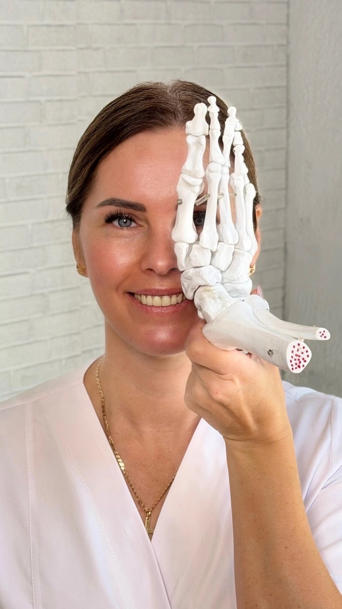
Начните с основ или дополните свою практику новой техникой. Программу, ближайшие даты и стоимость обсудим лично.

Первые шаги в профессии: эстетика педикюра, работа с пальчиками и ногтями.
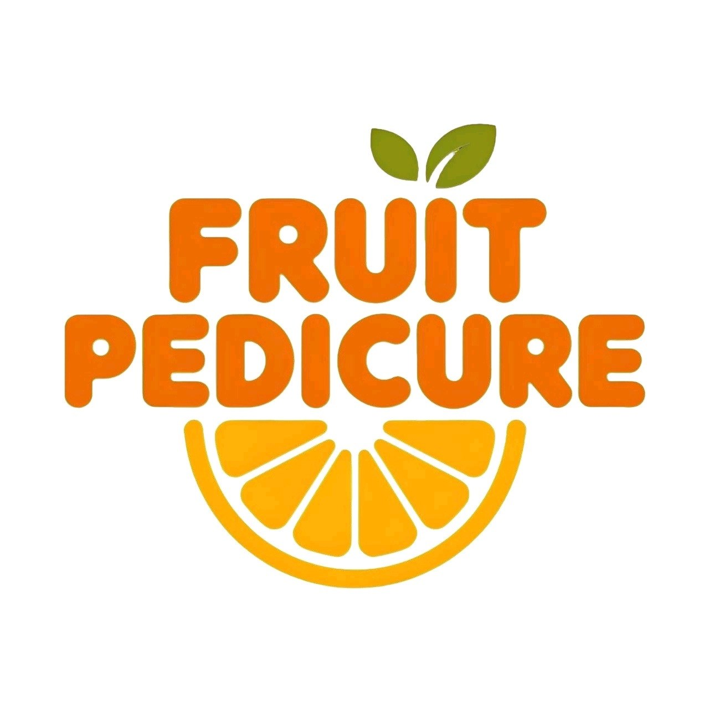
Знакомство с техникой фруктового педикюра и её применением в работе.
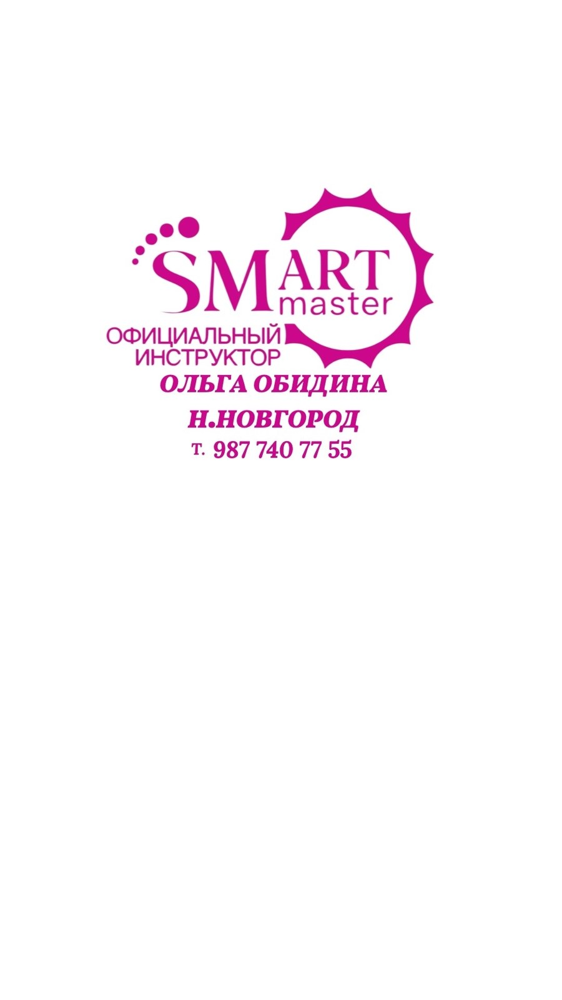
Работа со стопой и пятками. Обучение у официального инструктора SMART.
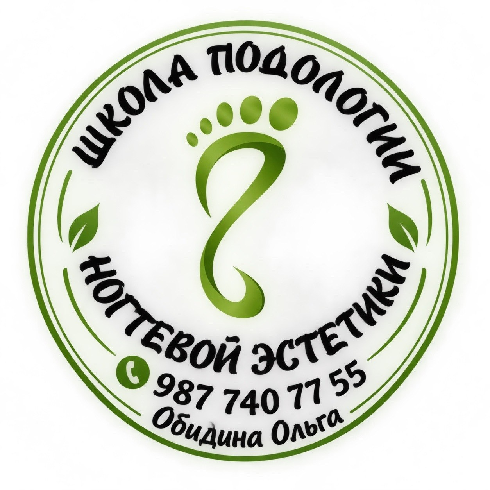
Работа со сложной стопой: теория и отработка на моделях.
Цены с Яндекс Карт. Если не знаете, что вам нужно, начните с консультации.
«Очень боялась, что будет больно. А всё было сделано быстро и без боли».
2 000 ₽Стержневая мозоль, бородавки, натоптыши: разберёмся, что это и что делать.
1 000 ₽Медицинский педикюр, если есть грибок или трещины.
4 000 ₽Коррекционная система для ногтя.
3 500 ₽Стопы и пальчики с покрытием. Без особенностей: 3 000 ₽, пальцы без покрытия: 2 500 ₽.
3 500 ₽Если вам трудно добраться до кабинета.
7 000 ₽По отзывам учениц. Даты, программу и стоимость Ольга расскажет по телефону.
«Всё очень грамотно разжёвано, по-другому не сказать».
«Самое большое количество моделей для отработки. Такое у меня в первый раз за обучение». На одном курсе показывали на 12 моделях.
«Сразу ставит руку!» Учит не только обработке проблемных ног, но и тонкостям работы.
«Всегда на связи, если вопросы. Поддержка от Ольги в дальнейшем гарантирована».
Фотографии и видео из практики Ольги. Результат зависит от исходного состояния и подбирается индивидуально.
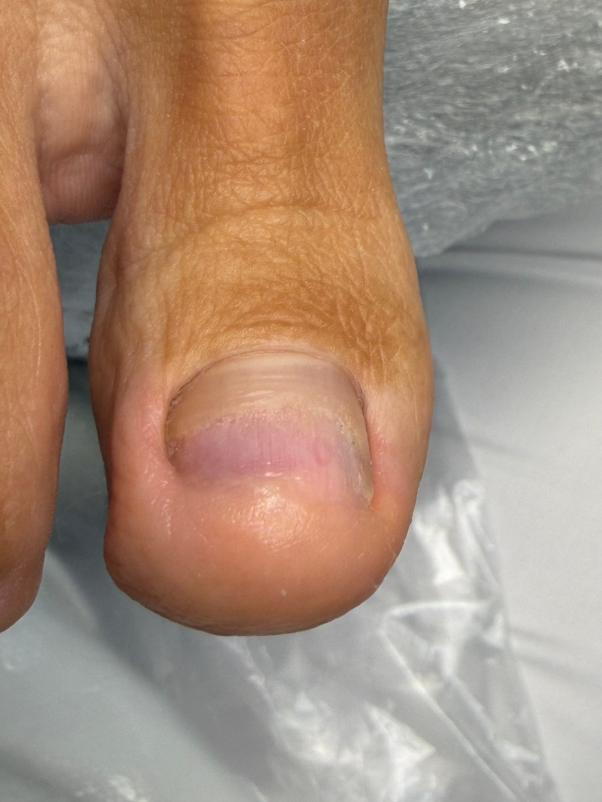
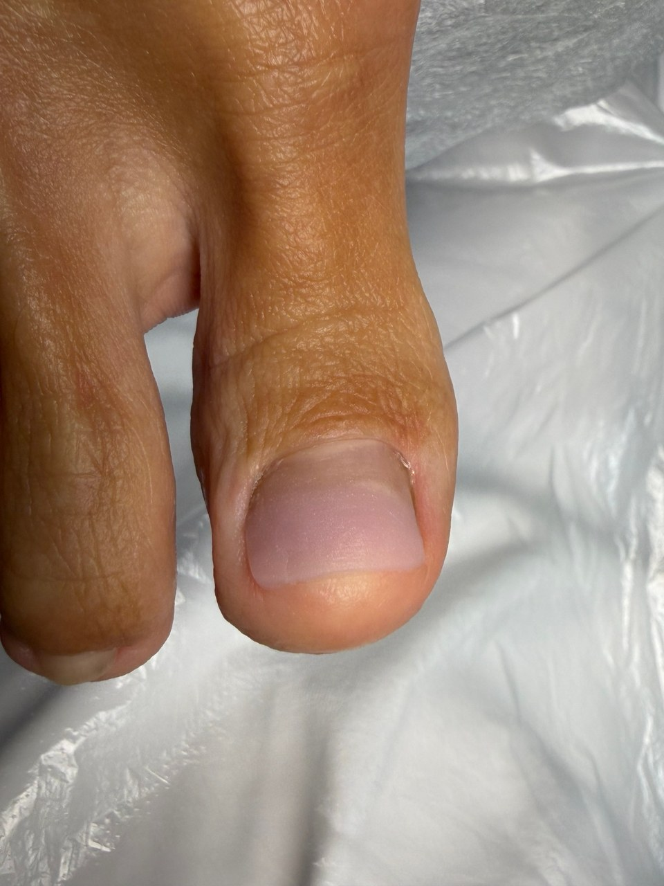
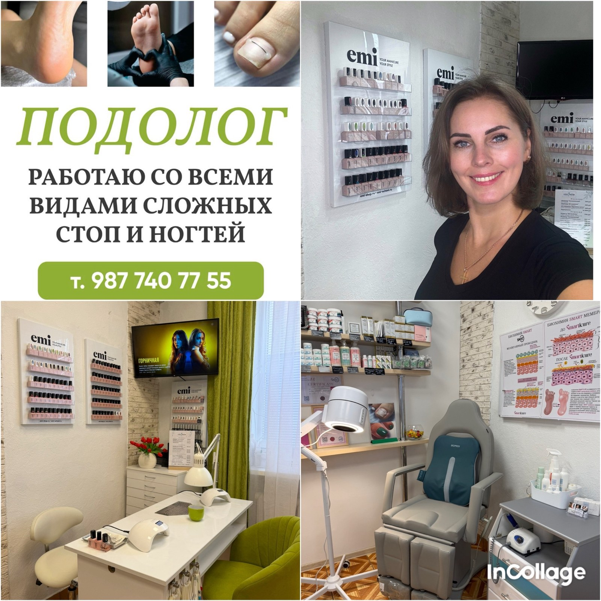
Подолог · действующая медицинская книжка
Официальный инструктор SMART
«Для меня чистота и идеальный порядок: основа качественного педикюра и залог вашего комфорта».
Кабинет в студии красоты на проспекте Ленина, 60. Есть парковка и Wi-Fi. Клиенты пишут, что на приёме «максимально расслабляются», а ножки после него «отдыхают».
Одна из учениц пришла к Ольге клиенткой, а ушла с новой профессией: «Она навела меня на мысль сменить род деятельности, не жалею ни капли».
Реальные занятия, ученицы и их впечатления об обучении.
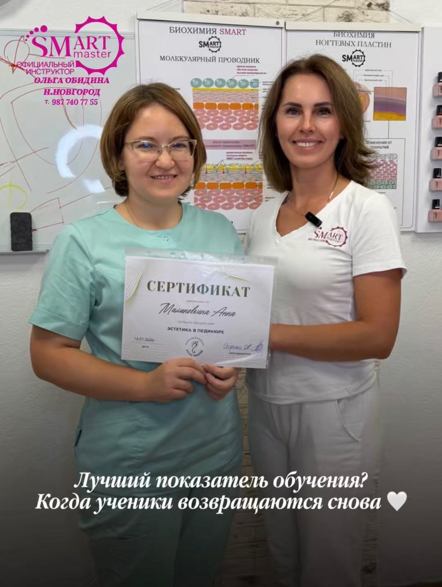
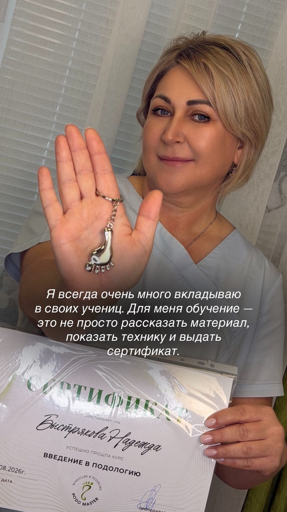
«Ножки мои после неё отдыхают, пяточки нежнейшие, и эффект сохраняется очень долго. На приёме я максимально расслабляюсь».
Яндекс Карты«Обратилась с проблемой вросшего ногтя. Оля встретила с улыбкой, успокоила, и за разговором всё было сделано быстро и без боли».
Яндекс Карты«Пептидный педикюр преобразил мои ножки, мастер посоветовала домашний уход за ногами».
Яндекс Карты«Уже много лет прихожу к ней на маникюр и педикюр. Всегда приветлива и доброжелательна».
Яндекс Карты«Обучалась у Ольги смарт 2.0. Приятная дружеская обстановка, всё доступно и понятно. Получила лицензию мастера смарт и занесена в реестр».
Яндекс Карты«Проходила курс „Подология“. Ольга с лёгкостью рассказала и показала на примере 12 моделей».
Яндекс Карты«Материал дан доступно, очень много моделей с различными видами стоп. Поддержка от Ольги в дальнейшем гарантирована».
Яндекс Карты«Очень понятно всё объясняет, до мелочей, которые очень важны в работе. Подбирает моделей с разными проблемами».
Яндекс КартыОт метро «Двигатель Революции» — две минуты пешком. Ищите вывеску «Студия красоты». Кабинет находится на первом этаже.
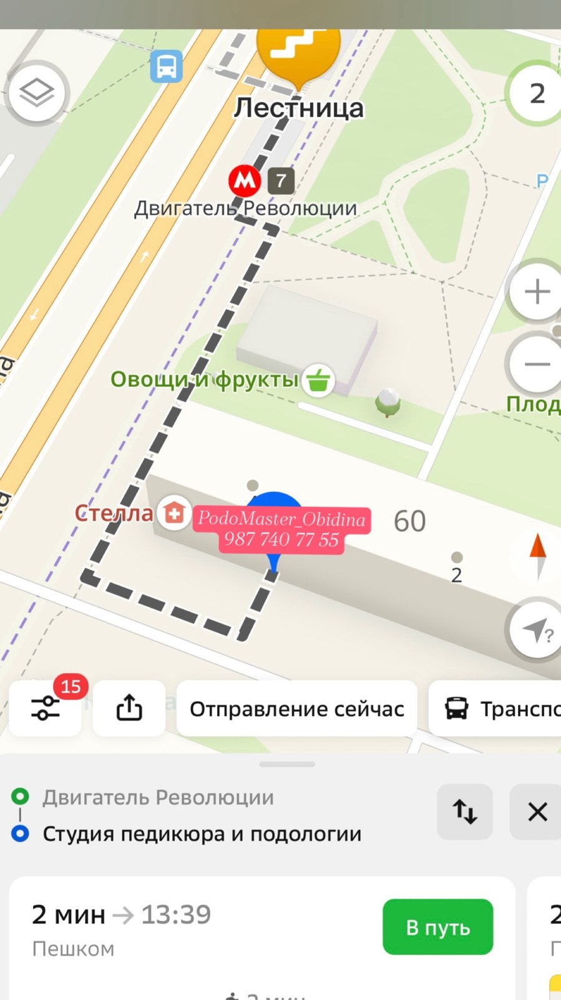
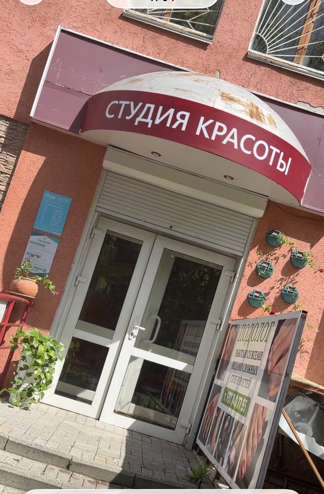